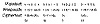

| Previous | Table of Contents | Next |
For example, consider a total knapsack weight of 70 and a sequence of weights of {2, 3, 6, 13, 27, 52}. The largest weight, 52, is less than 70, so 52 is in the knapsack. Subtracting 52 from 70 leaves 18. The next weight, 27, is greater than 18, so 27 is not in the knapsack. The next weight, 13, is less than 18, so 13 is in the knapsack. Subtracting 13 from 18 leaves 5. The next weight, 6, is greater than 5, so 6 is not in the knapsack. Continuing this process will show that both 2 and 3 are in the knapsack and the total weight is brought to 0, which indicates that a solution has been found. Were this a Merkle-Hellman knapsack encryption block, the plaintext that resulted from a ciphertext value of 70 would be 110101.
Non-superincreasing, or normal, knapsacks are hard problems; they have no known quick algorithm. The only known way to determine which items are in the knapsack is to methodically test possible solutions until you stumble on the correct one. The fastest algorithms, taking into account the various heuristics, grow exponentially with the number of possible weights in the knapsack. Add one item to the sequence of weights, and it takes twice as long to find the solution. This is much more difficult than a superincreasing knapsack where, if you add one more weight to the sequence, it simply takes another operation to find the solution.

Figure 19.1 Encryption with knapsacks.
The Merkle-Hellman algorithm is based on this property. The private key is a sequence of weights for a superincreasing knapsack problem. The public key is a sequence of weights for a normal knapsack problem with the same solution. Merkle and Hellman developed a technique for converting a superincreasing knapsack problem into a normal knapsack problem. They did this using modular arithmetic.
Creating the Public Key from the Private Key
Without going into the number theory, this is how the algorithm works: To get a normal knapsack sequence, take a superincreasing knapsack sequence, for example {2, 3, 6, 13, 27, 52}, and multiply all of the values by a number n, mod m. The modulus should be a number greater than the sum of all the numbers in the sequence: for example, 105. The multiplier should have no factors in common with the modulus: for example, 31. The normal knapsack sequence would then be
The knapsack would then be {62, 93, 81, 88, 102, 37}.
The superincreasing knapsack sequence is the private key. The normal knapsack sequence is the public key.
Encryption
To encrypt a binary message, first break it up into blocks equal to the number of items in the knapsack sequence. Then, allowing a one to indicate the item is present and a zero to indicate that the item is absent, compute the total weights of the knapsacks—one for every message block.
For example, if the message were 011000110101101110 in binary, encryption using the previous knapsack would proceed like this:
The ciphertext would be
Decryption
A legitimate recipient of this message knows the private key: the original superincreasing knapsack, as well as the values of n and m used to transform it into a normal knapsack. To decrypt the message, the recipient must first determine n-1 such that n(n-1 ) ≡ 1 (mod m). Multiply each of the ciphertext values by n-1 mod m, and then partition with the private knapsack to get the plaintext values.
In our example, the superincreasing knapsack is {2, 3, 6, 13, 27, 52}, m is equal to 105, and n is equal to 31. The ciphertext message is 174, 280, 333. In this case n-1 is equal to 61, so the ciphertext values must be multiplied by 61 mod 105.
The recovered plaintext is 011000 110101 101110.
Practical Implementations
With a knapsack sequence of only six items, it’s not hard to solve the problem even if it isn’t superincreasing. Real knapsacks should contain at least 250 items. The value for each term in the superincreasing knapsack should be somewhere between 200 and 400 bits long, and the modulus should be somewhere between 100 to 200 bits long. Real implementations of the algorithm use random-sequence generators to produce these values.
With knapsacks like that, it’s futile to try to solve them by brute force. If a computer could try a million possibilities per second, trying all possible knapsack values would take over 1046 years. Even a million machines working in parallel wouldn’t solve this problem before the sun went nova.
Security of Knapsacks
It wasn’t a million machines that broke the knapsack cryptosystem, but a pair of cryptographers. First a single bit of plaintext was recovered [725]. Then, Shamir showed that knapsacks can be broken in certain circumstances [1415, 1416]. There were other results—[1428, 38, 754, 516, 488]—but no one could break the general Merkle-Hellman system. Finally, Shamir and Zippel [1418, 1419, 1421] found flaws in the transformation that allowed them to reconstruct the superincreasing knapsack from the normal knapsack. The exact arguments are beyond the scope of this book, but a nice summary of them can be found in [1233, 1244]. At the conference where the results were presented, the attack was demonstrated on stage using an Apple II computer [492, 494].
Knapsack Variants
Since the original Merkle-Hellman scheme was broken, many other knapsack systems have been proposed: multiple iterated knapsacks, Graham-Shamir knapsacks, and others. These have all been analyzed and broken, generally using the same cryptographic techniques, and litter the cryptographic highway [260, 253, 269, 921, 15, 919, 920, 922, 366, 254, 263, 255]. Good overviews of these systems and their cryptanalyses can be found in [267, 479, 257, 268].
Other algorithms have been proposed that use ideas similar to those used in knapsack cryptosystems, but these too have been broken. The Lu-Lee cryptosystem [990, 13] was broken in [20, 614, 873]; a modification [507] is also insecure [1620]. Attacks on the Goodman-McAuley cryptosystem are in [646, 647, 267, 268]. The Pieprzyk cryptosystem [1246] can be broken by similar attacks. The Niemi cryptosystem [1169], based on modular knapsacks, was broken in [345, 788]. A newer multistage knapsack [747] has not yet been broken, but I am not optimistic. Another variant is [294].
While a variation of the knapsack algorithm is currently secure—the Chor-Rivest knapsack [356], despite a “specialized attack” [743]—the amount of computation required makes it far less useful than the other algorithms discussed here. A variant, called the Powerline System, is not secure [958]. Most important, considering the ease with which all the other variations fell, it doesn’t seem prudent to trust them.
| Previous | Table of Contents | Next |
){kind=link}
){kind=link}